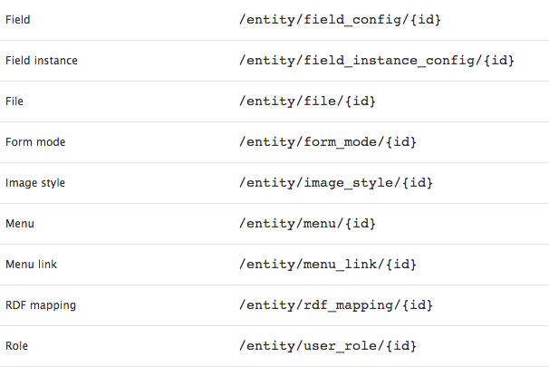

Build A Drupal-free Theme with 8's REST API and Javascript
rcaracaus
themer @ PreviousNext
Client Repo: https://github.com/rcaracaus/drupalft
Disclaimer: I am not an AngularJS developer
<DIVITIS>
This markup needs 4+ template overrides to remove/alter.
<div class="block-views-markup first">
<div class="view">
<div class="views-row views-row-first">
<div class="node content">
<div class="field field-recipe-title">
This is a Recipe's title
</div>
<div class="field field-recipe-body">
This is body content of recipe.
</div>
</div>
...
- block.tpl
- views--foo.tpl
- node.tpl
- field.tpl
Lean markup, scalable css.
<article class="recipe">
<div class="heading--primary">{{ recipe.title }}</div>
<div class="bodyText--light">{{ recipe.body }}</div>
</article>
<recipe></recipe>Raw data please.

Web Services and REST
- A web service exposes raw Drupal data at certain URLs (endpoints) of your Drupal site.
- REST is an architectural pattern guiding our interaction with this data.
D8 Web Services Modules
Configure D8 REST
Postman!
Enable CORS
header('Access-Control-Allow-Origin: *');
Angular Directives list
Angular Directives
<html ng-app="clientTheme">
<body>
<div ng-contoller="FormCtrl">
Click to show form!
</div>
</body>
</html>//app.js
var theme = angular.module('clientTheme', []);
theme.controller('FormCtrl', function($scope) {
$scope.showForm = false;
});- index.html
- app.js
- angular.js
Service
$http.get('recipes.json')
GET and REST
theme.config(function($httpProvider){
$httpProvider.defaults.headers.common['Accept'] = 'application/hal+json';
// delete $httpProvider.defaults.headers.common['X-Requested-With'];
});
GET a node from Drupal site
theme.factory('nodeService', function($http) {
return {
getNode: function(nid, callback) {
$http.get('http://mydrupalsite.com/node/' + nid).success(callback);
}
}
}
Routing
Set up Angular routes
<head>
<script src="js/angular.js"></script>
<script src="js/angular-route.js"></script>
<script src="app.js"></script>
</head>
<body>
<a href="/">Home</a>
<a href="/contact">Contact</a>
<a href="/about">About</a>
// ng-view is like $content in page.tpl
<div ng-view></div>
</body>
Set up Angular routes
var theme = angular.module('clientTheme', ['ngRoute']);
clientTheme.config(function($routeProvider) {
$routeProvider
.when('/', {
templateUrl : 'templates/home.html',
controller : 'mainController'
})
.when('/contact', {
templateUrl : 'templates/contact.html',
controller : 'contactController'
});
.when('/about-us', {
templateUrl : 'templates/about.html',
controller : 'aboutController'
});
});
Arguments in Angular
- Arguments are known as $routeparams in Angular
- These can be specified as a wildcard, similar to Drupal's (%) sign.
Arguments with Angular via $routeparams
Node detail page: node/1 vs. node/2
clientTheme.config(function($routeProvider) {
$routeProvider
.when("/node/:nid", {
templateUrl : "node.html" ,
controller : "NodeCtrl"
});
});
app.controller("NodeCtrl", function($scope, $routeParams) {
$scope.nid = $routeParams.nid;
});Node detail pages with $routeparams
app.factory('dftService', function($http) {
return {
getNode: function(nid, callback) {
$http.get('http://mydrupalsite.com/node/' + nid)
.success(callback);
}
}
});
app.controller('NodeCtrl',
function($scope, dftService, $routeParams) {
dftService.getNode($routeParams.nid, function(data) {
$scope.node = data;
});
});
GET a view
Filtering, sorting and searching data with Angular
ng-repeat="recipe in recipes | filter:{field_tags:searchTermText}"
GET custom block onto homepage > DBLOGresource
Should we use a client-side theme?
- I would not use Angular for a content heavy website.
Routing
Learning curves
Templating
Thanks!
- twitter: @robertcaracaus
- Slides: http://rcaracaus.github.io/dc-austin-dft/
- Client Repo: https://github.com/rcaracaus/drupalft
- Questions?